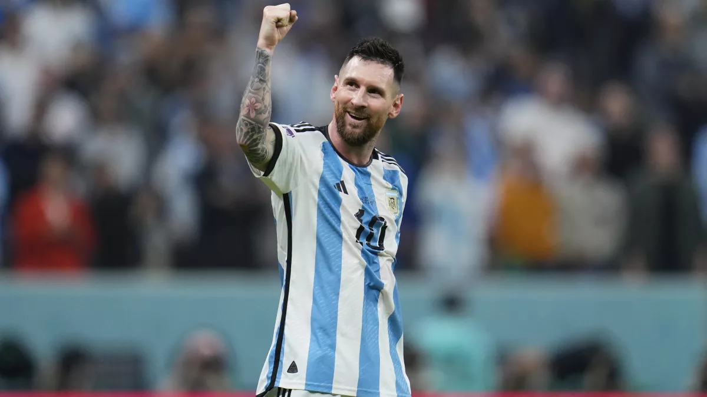
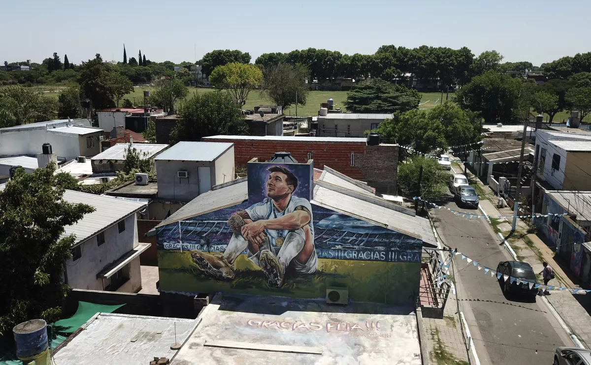

Lionel Messi, a hero in Rosario, can sway the rest of Argentina
with a World Cup win

AL RAYYAN, Qatar — Lionel Messi left the southern suburbs of Rosario, Argentina’s third-largest city, when he was just 13. But Rosario never left Messi.
The small concrete-block house where he grew up has become a Messi mecca, with fans coming from all over the world to stand on the paving-stone sidewalk in reverential silence. Down the street is the small field where he took some of his first touches.
The city offers a two-hour walking tour to more of Messi’s childhood haunts, including the Abanderado Grandoli soccer club, which the shy boy joined at the insistence of his grandmother.

Messi is larger than life in Rosario, where a 226-foot fresco, the largest of many murals of the city’s favorite son, was painted on the side of a downtown apartment building. Yet he would grow in stature Sunday with a win over France in the World Cup final.
There is nothing more important in Argentina than soccer and no one more important to the Argentine national team than its captain. But there’s something missing.
Messi is a seven-time world player of the year, a four-time Champions League winner, an Olympic gold medalist and the second-leading goal scorer of all time behind Cristiano Ronaldo. But he never has been a world champion, making it past the World Cup quarterfinals only once before. And the pressure was so immense in that 2014 final, Messi vomited on the field.
He wound up winning the Golden Ball as the best player in that tournament, but Germany won the World Cup
1-0 in extra time.
Now Messi is back. When he steps on the field for Sunday’s final with France, he’ll set a record for most World Cup appearances with 26. His 11 goals are already an Argentine record; one more and he’ll tie Pele. Only five other men have played in five World Cups.
What he hasn’t done is win a World Cup.
Messi’s five goals and three assists, both tied for the tournament lead, have given him a hand in two-thirds of Argentina’s 12 goals in Qatar. He’s the only player since 1966 to score and assist in three World Cup games, the only player to have an assist in five World Cup tournaments and the only player to score a goal in a World Cup game as a teen, in his 20s and in his 30s.
What he doesn’t have is a World Cup trophy. And until he gets one, his claim to being the best player of all time will include an asterisk. How can you be the best player if you haven’t won the biggest prize?
Without a World Cup, Messi will forever live in the shadow of Diego Maradona, another larger-than-life figure who scored fewer goals and played fewer games. But he won a World Cup 51 months before Messi was born.
Messi does have Rosario — also the birthplace of revolutionary leader Che Guevara — and at 35, on the eve of what Messi says will be his final World Cup game, the town, if not the world, is rooting for him.
“He was always kicking something, a ball, bottle cap,” Fernanda Quiroga, who is the same age of the boy who grew up across the street, told the Associated Press. “It’s been said this is Leo’s last World Cup, so we’re all hoping he wins it, more for him than for the national team itself.”
“I think what weighs more this time around is that we want him to get it because he’s generated so much love and respect,” Quiroga added.
There is also a mural across the street from Messi’s old grade school. Neighbors say people come to pray there; Messi, however, barely studied there before leaving for Barcelona, though even his teachers don’t begrudge him.
“He was very focused on soccer,” Andrea Liliana Sosa, who taught Messi math and science in the fifth and sixth grades, told the AP. “[A World Cup] would be like the cherry that’s missing. But he has done enough to be recognized and loved by everyone.”